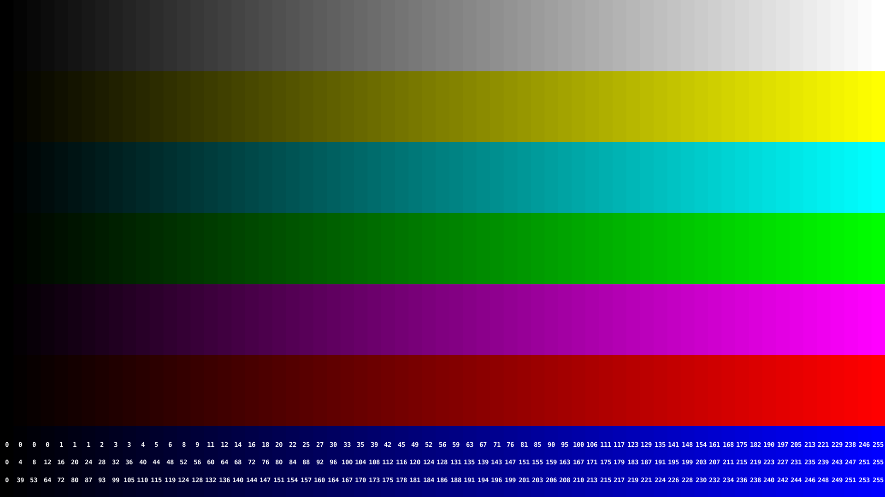
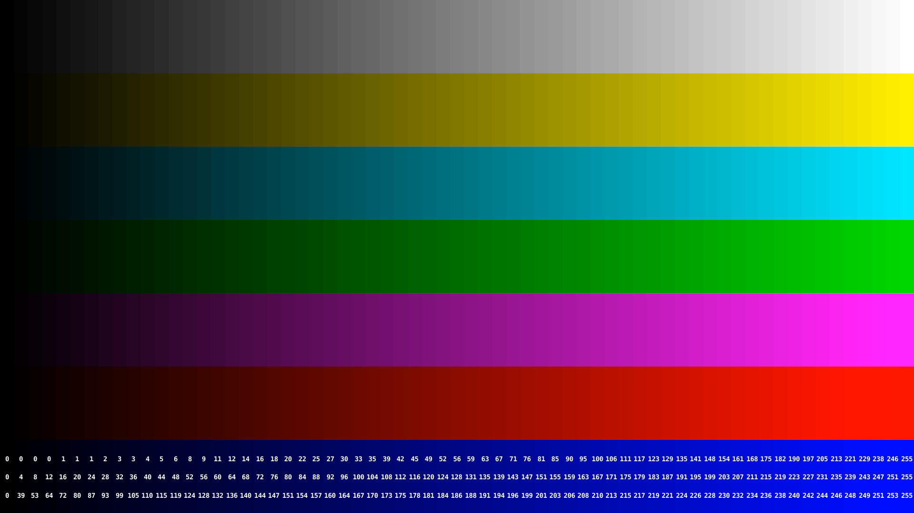
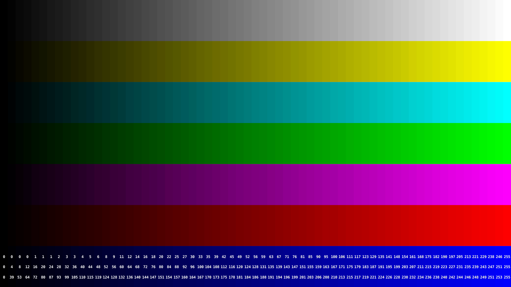
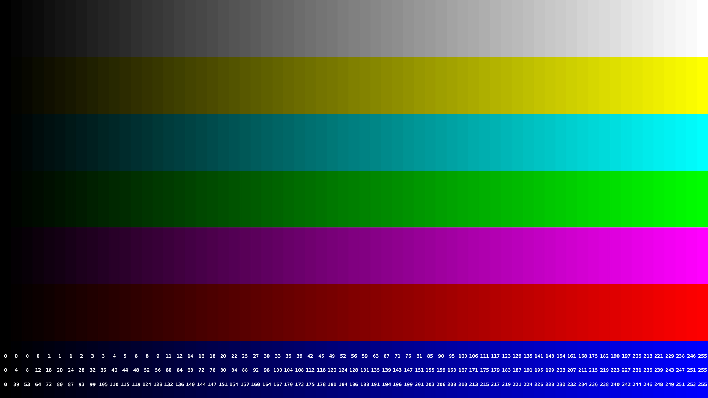
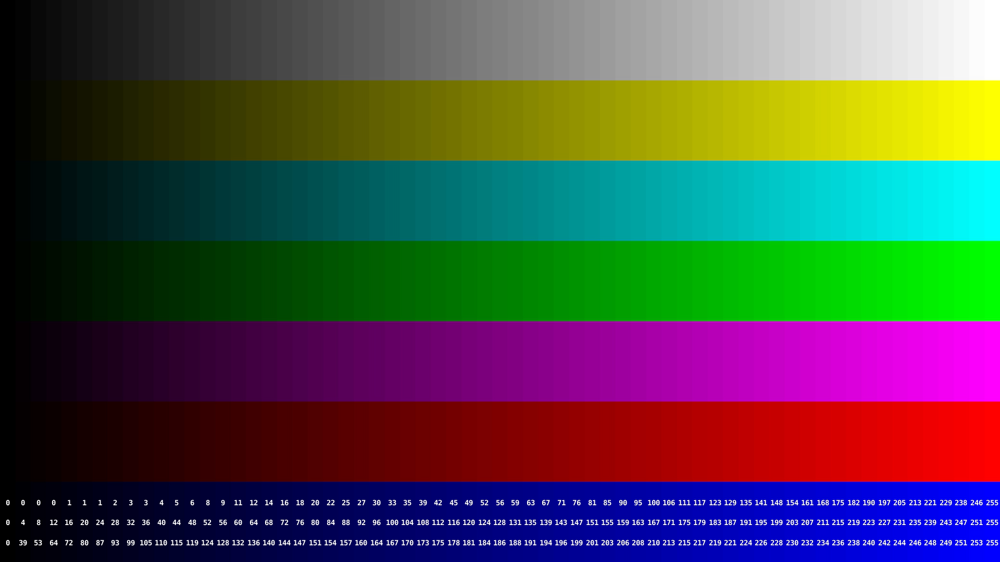
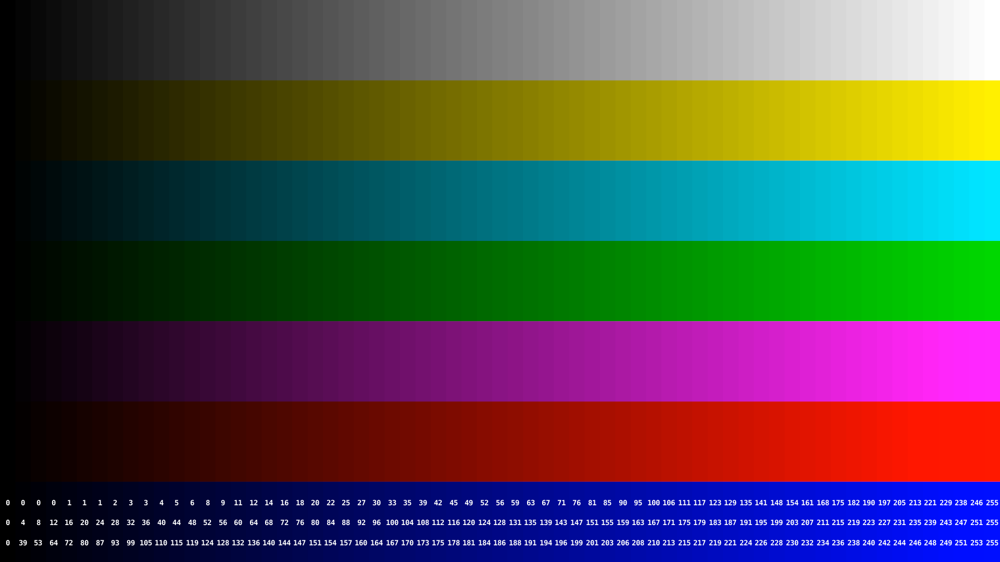
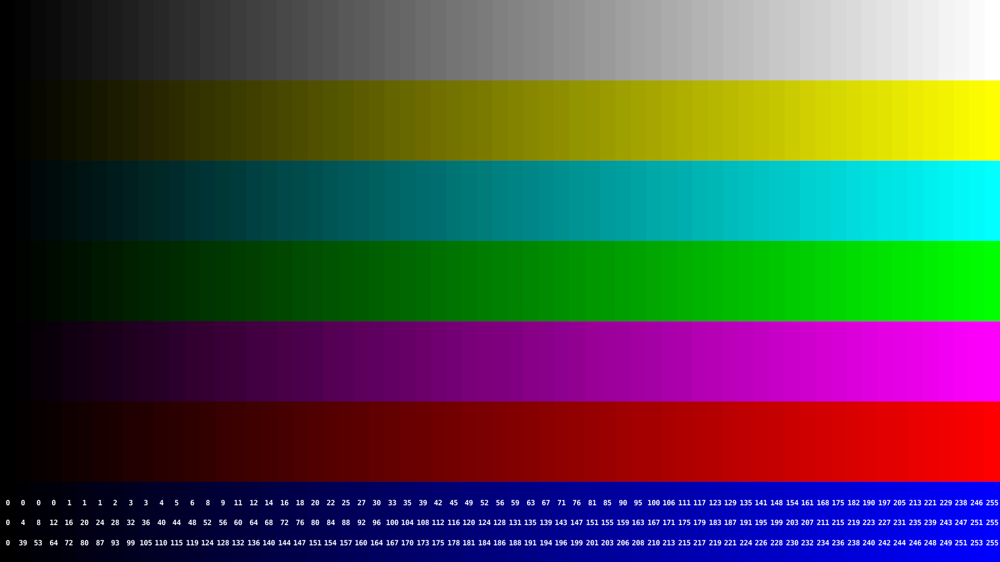
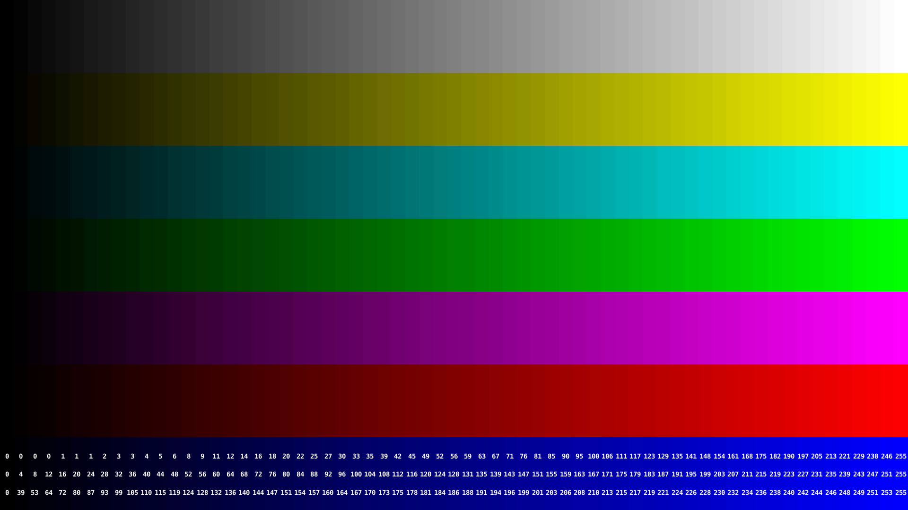
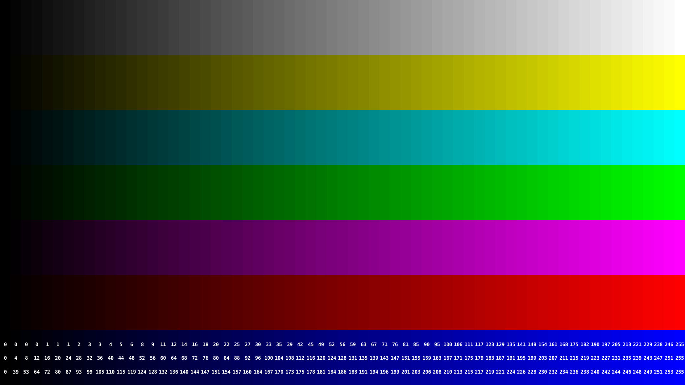
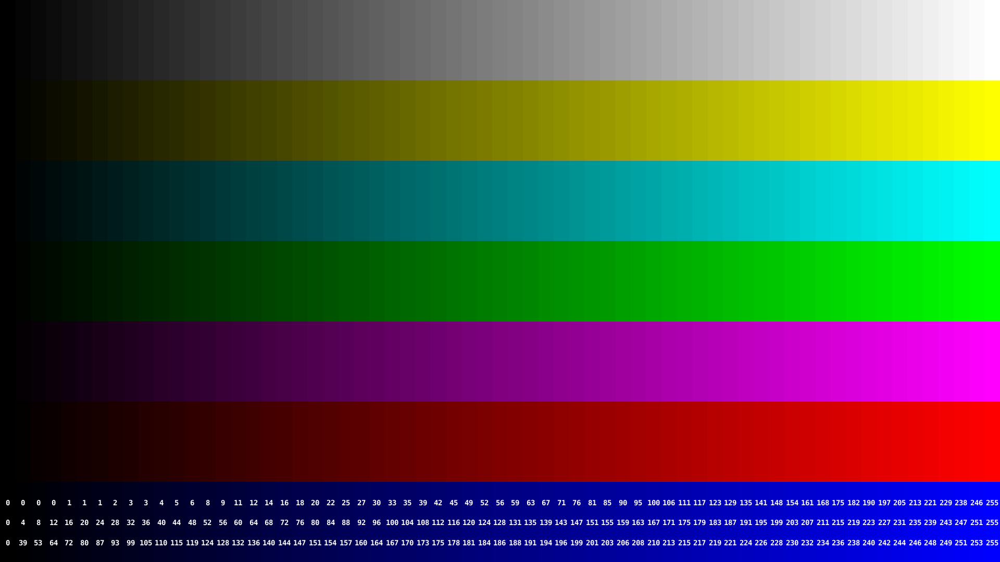

This is comparing different ways to do the YUV conversion. We are doing it in both 420p and 444p since 444p is a fairer binary image comparison. The takeaway should be to use the libswscale filter. The code to generate these files is here.
|
YUV420p encodes YUV444p encodes (Chrome Only) |
Reference PNGSource PNG file YUV420p encodesDefault Encode (terrible)Basic ffmpeg conversion, no colorspace specified, ffmpeg assumes bt601 colorspace. This is a terrible filter, significant color changes from PNG file. ffmpeg flags to add:Full creation commandline: OIIO idiff outputidiff -o ./chip-chart-yuvconvert/chip-chart-1080-noiccdiff.png ../sourceimages/chip-chart-1080-noicc.png ./chip-chart-yuvconvert/chip-chart-1080-noicc-basic.png b'Comparing "../sourceimages/chip-chart-1080-noicc.png" and "./chip-chart-yuvconvert/chip-chart-1080-noicc-basic.png"Mean error = 0.0212507 RMS error = 0.0388912 Peak SNR = 28.203 Max error = 0.556863 @ (1815, 1004, B) values are 0, 0, 0.952941 vs 0.0705882, 0.0901961, 0.396078 1792353 pixels (86.4%) over 1e-06 1792353 pixels (86.4%) over 1e-06 FAILURE 'ERROR! Colormatrix filter (close)Using colormatrix filter. colormatrix only supports 8-bit per component images. Visually its getting pretty close. ffmpeg flags to add: -sws_flags spline+accurate_rnd+full_chroma_int -vf "colormatrix=bt470bg:bt709"Full creation commandline: OIIO idiff outputidiff -o ./chip-chart-yuvconvert/chip-chart-1080-noiccdiff.png ../sourceimages/chip-chart-1080-noicc.png ./chip-chart-yuvconvert/chip-chart-1080-noicc-colormatrix.png b'Comparing "../sourceimages/chip-chart-1080-noicc.png" and "./chip-chart-yuvconvert/chip-chart-1080-noicc-colormatrix.png"Mean error = 0.00307147 RMS error = 0.0124281 Peak SNR = 38.1119 Max error = 0.568627 @ (1904, 1040, B) values are 0, 0, 1 vs 0.0666667, 0.0588235, 0.431373 1482440 pixels (71.5%) over 1e-06 1482440 pixels (71.5%) over 1e-06 FAILURE 'ERROR! Colorspace filterUsing colorspace filter, better quality filter, SIMD so faster too, can support 10-bit too. Visually pretty close to colormatrix, but slight improvement based on colormatrix values. ffmpeg flags to add: -sws_flags spline+accurate_rnd+full_chroma_int -vf "colorspace=bt709:iall=bt601-6-625:fast=1"Full creation commandline: OIIO idiff outputidiff -o ./chip-chart-yuvconvert/chip-chart-1080-noiccdiff.png ../sourceimages/chip-chart-1080-noicc.png ./chip-chart-yuvconvert/chip-chart-1080-noicc-colorspace.png b'Comparing "../sourceimages/chip-chart-1080-noicc.png" and "./chip-chart-yuvconvert/chip-chart-1080-noicc-colorspace.png"Mean error = 0.002964 RMS error = 0.0123796 Peak SNR = 38.1459 Max error = 0.564706 @ (1904, 963, B) values are 0, 0, 1 vs 0.0627451, 0.0588235, 0.435294 1473078 pixels (71%) over 1e-06 1473078 pixels (71%) over 1e-06 FAILURE 'ERROR! libswscale filter + flags (best)Using the libswscale library. Seems similar to colorspace, but with image resizing, and levels built in. This also has a number of libswscale parameters. Visually this is close to the above two, but slight improvement based on colormatrix results. ffmpeg flags to add: -sws_flags spline+accurate_rnd+full_chroma_int+full_chroma_inp -vf "scale=in_range=full:in_color_matrix=bt709:out_range=tv:out_color_matrix=bt709"Full creation commandline: OIIO idiff outputidiff -o ./chip-chart-yuvconvert/chip-chart-1080-noiccdiff.png ../sourceimages/chip-chart-1080-noicc.png ./chip-chart-yuvconvert/chip-chart-1080-noicc-splinecolormatrix.png b'Comparing "../sourceimages/chip-chart-1080-noicc.png" and "./chip-chart-yuvconvert/chip-chart-1080-noicc-splinecolormatrix.png"Mean error = 0.00260747 RMS error = 0.0131948 Peak SNR = 37.592 Max error = 0.627451 @ (1904, 963, B) values are 0, 0, 1 vs 0.054902, 0.0470588, 0.372549 1341240 pixels (64.7%) over 1e-06 1341240 pixels (64.7%) over 1e-06 FAILURE 'ERROR! YUV444p encodes (Chrome Only)Default Encode (terrible)Basic ffmpeg conversion, ffmpeg assumes bt601 colorspace, now at 444. Results look terrible. ffmpeg flags to add:Full creation commandline: OIIO idiff outputidiff -o ./chip-chart-yuvconvert/chip-chart-1080-noiccdiff.png ../sourceimages/chip-chart-1080-noicc.png ./chip-chart-yuvconvert/chip-chart-1080-noicc-basic444.png b'Comparing "../sourceimages/chip-chart-1080-noicc.png" and "./chip-chart-yuvconvert/chip-chart-1080-noicc-basic444.png"Mean error = 0.0202582 RMS error = 0.0371307 Peak SNR = 28.6053 Max error = 0.156863 @ (1891, 618, G) values are 1, 0, 1 vs 1, 0.156863, 1 1718054 pixels (82.9%) over 1e-06 1718054 pixels (82.9%) over 1e-06 FAILURE 'ERROR! Colormatrix filter (close)Using colormatrix filter. colormatrix only supports 8-bit per component images. Visually pretty close, but still off. ffmpeg flags to add: -sws_flags spline+accurate_rnd+full_chroma_int -vf "colormatrix=bt470bg:bt709"Full creation commandline: OIIO idiff outputidiff -o ./chip-chart-yuvconvert/chip-chart-1080-noiccdiff.png ../sourceimages/chip-chart-1080-noicc.png ./chip-chart-yuvconvert/chip-chart-1080-noicc-spline444colormatrix2.png b'Comparing "../sourceimages/chip-chart-1080-noicc.png" and "./chip-chart-yuvconvert/chip-chart-1080-noicc-spline444colormatrix2.png"Mean error = 0.00153716 RMS error = 0.00270346 Peak SNR = 51.3616 Max error = 0.0117647 @ (1389, 462, R) values are 0, 0.733333, 0.690196 vs 0.0117647, 0.737255, 0.694118 1434882 pixels (69.2%) over 1e-06 1434882 pixels (69.2%) over 1e-06 FAILURE 'ERROR! Colorspace filterUsing colorspace filter, better quality filter, SIMD so faster too, can support 10-bit too. Visually slight differences, but getting closer. ffmpeg flags to add: -sws_flags spline+accurate_rnd+full_chroma_int -vf "colorspace=bt709:iall=bt601-6-625:fast=1"Full creation commandline: OIIO idiff outputidiff -o ./chip-chart-yuvconvert/chip-chart-1080-noiccdiff.png ../sourceimages/chip-chart-1080-noicc.png ./chip-chart-yuvconvert/chip-chart-1080-noicc-spline444colorspace.png b'Comparing "../sourceimages/chip-chart-1080-noicc.png" and "./chip-chart-yuvconvert/chip-chart-1080-noicc-spline444colorspace.png"Mean error = 3.52001e-05 RMS error = 0.000371537 Peak SNR = 68.6 Max error = 0.00392163 @ (870, 967, R) values are 0.74902, 0.74902, 0.862745 vs 0.752941, 0.74902, 0.862745 55838 pixels (2.69%) over 1e-06 55838 pixels (2.69%) over 1e-06 FAILURE 'ERROR! libswscale filter + flags (Match)Using the libswscale library. Seems similar to colorspace, but with image resizing, and levels built in. This also has a number of libswscale parameters. Looking at the oiio difference, this is the first one that has an identical result to the input image. ffmpeg flags to add: -sws_flags spline+accurate_rnd+full_chroma_int+full_chroma_inp -vf "scale=in_range=full:in_color_matrix=bt709:out_range=tv:out_color_matrix=bt709"Full creation commandline: OIIO idiff outputidiff -o ./chip-chart-yuvconvert/chip-chart-1080-noiccdiff.png ../sourceimages/chip-chart-1080-noicc.png ./chip-chart-yuvconvert/chip-chart-1080-noicc-spline444out_color_matrix.png b'Comparing "../sourceimages/chip-chart-1080-noicc.png" and "./chip-chart-yuvconvert/chip-chart-1080-noicc-spline444out_color_matrix.png"PASS ' libswscale filter + flags full-range (Match)Using the libswscale library. Seems similar to colorspace, but with image resizing, and levels built in. This also has a number of libswscale parameters. Looking at the oiio difference, this is the first one that has an identical result to the input image. ffmpeg flags to add: -sws_flags spline+accurate_rnd+full_chroma_int+full_chroma_inp -vf "scale=in_range=full:in_color_matrix=bt709:out_range=full:out_color_matrix=bt709"Full creation commandline: OIIO idiff outputidiff -o ./chip-chart-yuvconvert/chip-chart-1080-noiccdiff.png ../sourceimages/chip-chart-1080-noicc.png ./chip-chart-yuvconvert/chip-chart-1080-noicc-spline444out_color_matrixfull.png b'Comparing "../sourceimages/chip-chart-1080-noicc.png" and "./chip-chart-yuvconvert/chip-chart-1080-noicc-spline444out_color_matrixfull.png"Mean error = 0.0192679 RMS error = 0.0297079 Peak SNR = 30.5426 Max error = 0.0784314 @ (1742, 0, R) values are 0.909804, 0.909804, 0.909804 vs 0.988235, 0.988235, 0.988235 1942348 pixels (93.7%) over 1e-06 1942348 pixels (93.7%) over 1e-06 FAILURE 'ERROR! |